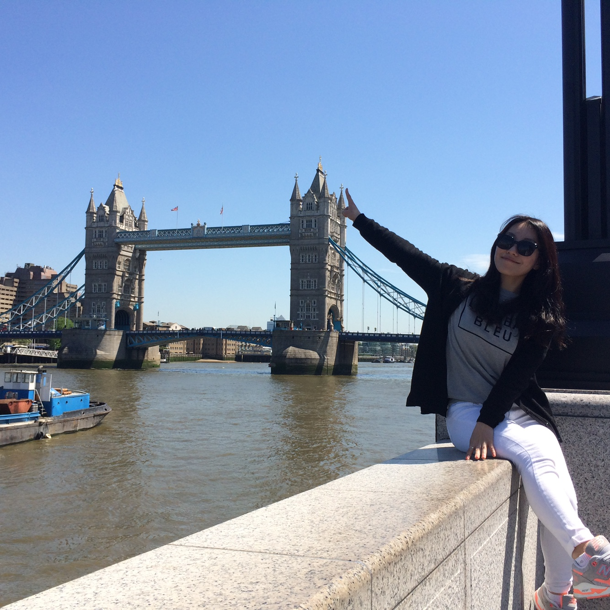
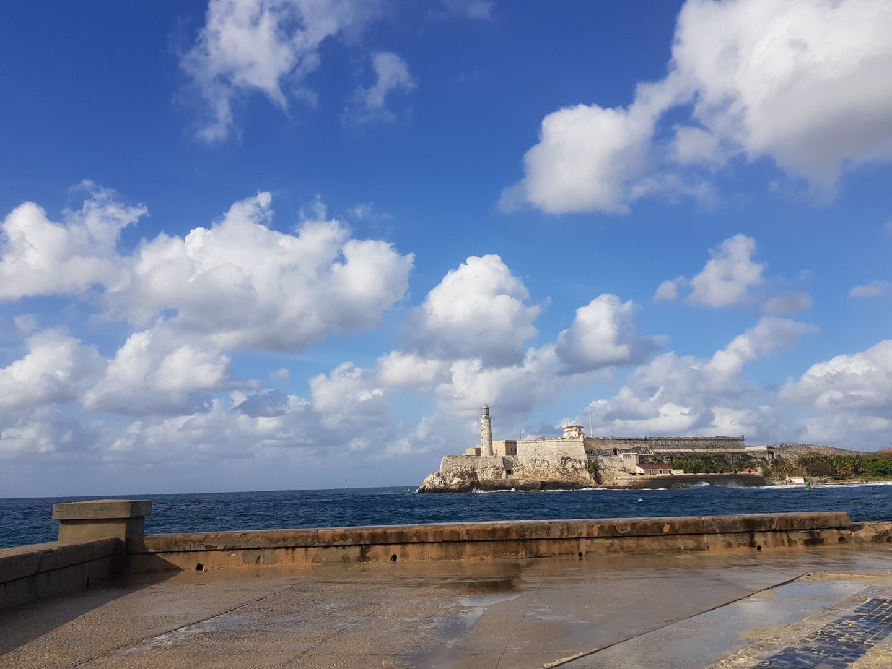
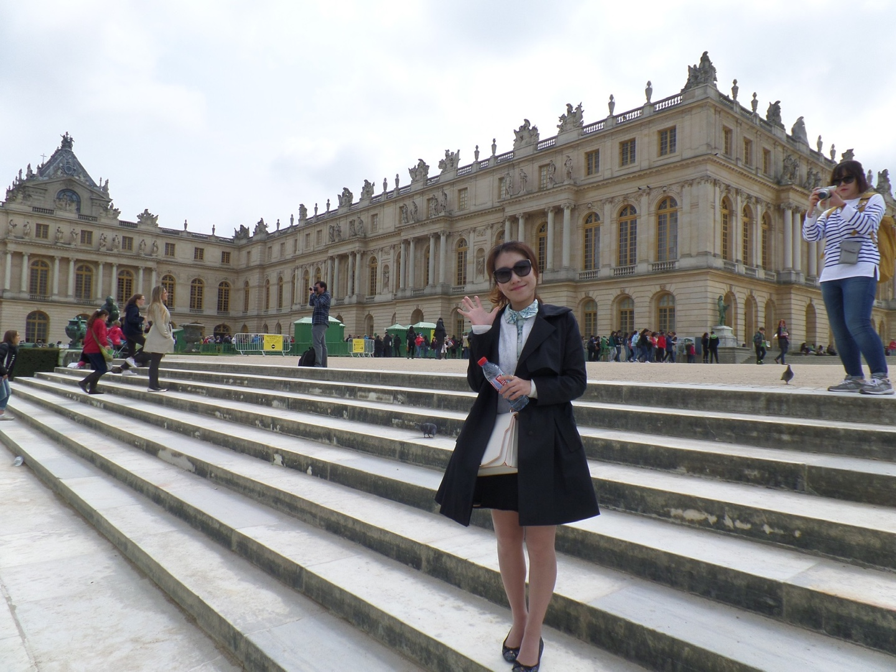
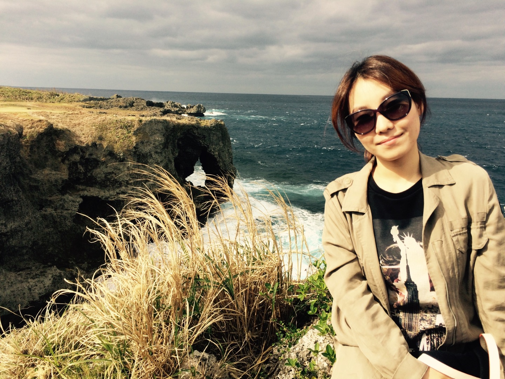

Welcome! Strasbourg is a travel destination near Paris, where the entire old city is listed as a UNESCO World Heritage Site. Enjoy the beautiful scenery like a village in a fairy tale.
1M views 1 month ago

Traveler Nari1M subscribers
Up next

Malekon Beach in Cuba. You can see people sitting on the beach enjoying their leisure time.Traveler Nari82K views

Chateau de Versailles. The core of the Baroque palace architecture.Traveler Nari82K views

Okinawa Island.Cape Manzamo. In addition to the mysterious scenery, it is an indispensable tourist attraction in Okinawa with grass and trails.Traveler Nari82K views